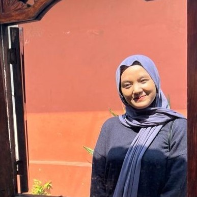

About Us
YOLO singkatan dari "You Only Look Once", dan seperti namanya, sistem kami memungkinkan kita melihat sekali saja untuk menemukan cacat pada kain. Gampangnya, kita bisa mendeteksi masalah dengan cepat dan akurat!
Mengapa Memilih Kami?
-
Teknologi Terkini
Kami menggunakan teknologi terbaru dalam pengembangan sistem deteksi kami untuk memastikan akurasi dan keandalan dalam mendeteksi cacat.
-
Presisi Tinggi
Sistem kami dirancang untuk mendeteksi cacat dengan tingkat presisi yang tinggi, memastikan tidak ada cacat kecil yang terlewatkan.
-
Otomatisasi Proses
Dengan pendekatan otomatisasi, kami membantu meningkatkan efisiensi dalam produksi kain tanpa mengorbankan kualitas.
Application
Team
Goldfarb 2
Anik Oktavia Utami
Universitas Teknologi Digital Indonesia
